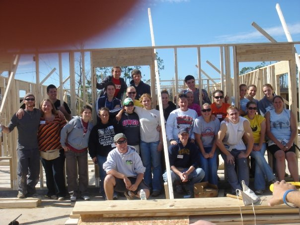
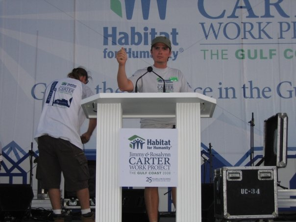

Education and Work

Work Experience
ACME Scenic & Display – Portland, Oregon – 1996-2002, 2006–2007, 2013-Present
Installer I
- Event instillation and direct client liaison for ACME Scenic and Display
- On-site lead for the creation of event spaces, high level displays, large scale kickoff presentations as well as fundraisers and corporate meetings
- Adapted and repair of display, product or show set up to meet/excel in client expectations
- Assist in welding and industrial design with projects and creations
- Work with internal departments and external vendors towards project completion
Shipping and Receiving, Warehouse
- Managed and prioritized all incoming and outgoing packages shipped via UPS/FedEx to the Nike Campus and to other creative projects
- Provided assistance in the welding and carpentry shops as well as with design processes and ideas
American Tinnitus Association – Portland, Oregon – 2009-2013
Social Media Marketing Manager
- Organized, monitored, and managed all social media outlets for the organization
- Created a functional social media policy for the organization
- Increased public awareness, transparency, and presence through online sources
- Designed graphics via Creative Suite for social media, print, and electronic publications
Fulfillment Coordinator
- Co-managed the organization’s ListMaster program (a private database with over 195,000 entries)
- Compiled daily donation reports
- Processed all credit card donations and product orders
- Managed shipping and receiving products for online store
- Coordinated and managed questions, concerns, and other communications that were sent to the main organization email
- Assisted in the design of new print materials

Habitat for Humanity – AmeriCorps State – Biloxi, Mississippi – 2007-2008
Assistant Construction Supervisor, Assistant Rehab Supervisor
- Trained and worked with groups of 10-45 volunteers toward eliminating poverty housing
- Oversaw and coordinated these groups in over 75 houses in a Post-Katrina environment
- Managed coordination and delivery of materials and appliances to 40 houses under tight deadlines
- Provided logistical leadership and guidance for a team of fellow AmeriCorps for the project
Education
Portland State University
Portland, OR
Certificate of Completion – Project Management
University of Oregon
Eugene, OR
- Bachelor of Science – Art & Political Science
- Minor in Multimedia & Graphic Design